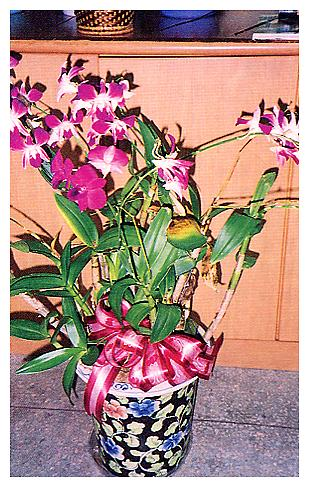
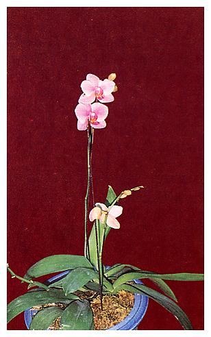

| 編號 | 照片 | 名稱 |
| 01 |  | 紅葉鐵莧、紅桑 |
| Acalypha wilkesianaMuell.-Arg. | ||
| 大戟科 Euphorbiaceae | ||
| 介紹 | 多年生灌木，葉互生，葉片有各種色彩變化，寬卵形，先端尖，葉基心形，鋸齒緣，形若桑葉，因葉常紅色，故名「紅桑」。性喜陽光也耐乾旱，雌雄同株，雄花序穗狀紅褐色，長15～25公分，小花多數簇生其上，雌花序穗狀，紅褐色，每花具一紅褐色心形苞片，子房三室，花柱紅色鬚狀，繁殖可用分株法或阡插。 | |
| 編號 | 照片 | 名稱 |
| 02 |  | 黑板樹 |
| Alotonia scholaris (L.)R.Br. | ||
| 夾竹桃科 Apocynaceae | ||
| 介紹 | 常綠喬木，枝輪生，具乳汁。葉6～10枚輪生，革質倒卵形，側脈平行。聚繖花序，花黃白色，莢果褐色，細圓柱形，叢生下垂，種子細長。樹幹挺直樹勢強健，耐風、抗污染。黑板樹是台中市之市樹。 | |